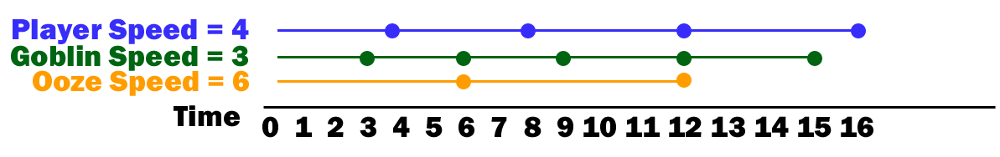

Scheduling System
During this tutorial we will create a Scheduling System. Some roguelikes also refer to these as time systems. You can find out how lots of developers create their time systems by reading the Roguelike Dev Subreddit FAQ Friday #41.
Scheduling System Details
Most roguelikes including this tutorial are turn-based, meaning each Actor acts on their turn. The simplest way to achieve this is to just have a giant queue structure and have everyone act in order one-by-one. When the actor is removed from the queue and takes their turn then they get re-added to the back of the queue. The player goes, and then each monster takes a turn, then the player takes their turn again and so on.
Unfortunately if we did something that simple it wouldn’t be very interesting. All Actors would have the same speed. Effectively this would mean that you could never run away from monsters or catch a fleeing monster.
To get around this issue we will give each Actor a Speed statistic which will represent how often they can take actions. You may even remember in a previous tutorial where we defined stats we already allocated a Speed stat. We just never got around to using it, but we are about to fix that!
The concept behind our scheduling system is that it will keep track of the time or number of turns that have passed as well as the current time. The Speed of the actor will determine when they get inserted into the timeline. Note that in this case having a lower speed is better.

In the Example Schedule above notice that during the first 12 turns the player with a speed of 4 will have acted 3 times. The goblin with a speed of 3 will have acted 4 times. And the Ooze with a speed of 6 will have only acted twice. This means that a player would be able to easily outrun an ooze, but not the goblin. The goblin moves twice as fast as the ooze.
Data Structure
To represent this data structure in code we will use a SortedDictionary<int, List<IScheduleable>>. This may look a little odd at first, but all it really means is that each Key in the dictionary is an integer that represents the time. The Value of each dictionary entry is a List<IScheduleable>. But what exactly is an IScheduleable? It’s a custom interface that we’ll make and it will just have a single property Time. What we are saying is that we can put anything on the schedule as long as it has a Time which represents how many turns pass until its time comes up again on the schedule. Add the IScheduleable.cs file to the Interfaces folder and add the following code.
public interface IScheduleable
{
int Time { get; }
}
So now that we see what an IScheduleable is, the next question is why do we have a List<> of them for each key in the dictionary? The answer goes back to our to our Example Schedule. If you look at it closer you’ll notice that more than one Actor can act on the same time interval. At Time 6 both the Ooze and Goblin act. At time 12 all three act.
Let’s go ahead and create SchedulingSystem.cs in the Systems folder.
public class SchedulingSystem
{
private int _time;
private readonly SortedDictionary<int, List<IScheduleable>> _scheduleables;
public SchedulingSystem()
{
_time = 0;
_scheduleables = new SortedDictionary<int, List<IScheduleable>>();
}
// Add a new object to the schedule
// Place it at the current time plus the object's Time property.
public void Add( IScheduleable scheduleable )
{
int key = _time + scheduleable.Time;
if ( !_scheduleables.ContainsKey( key ) )
{
_scheduleables.Add( key, new List<IScheduleable>() );
}
_scheduleables[key].Add( scheduleable );
}
// Remove a specific object from the schedule.
// Useful for when an monster is killed to remove it before it's action comes up again.
public void Remove( IScheduleable scheduleable )
{
KeyValuePair<int, List<IScheduleable>> scheduleableListFound
= new KeyValuePair<int, List<IScheduleable>>( -1, null );
foreach ( var scheduleablesList in _scheduleables )
{
if ( scheduleablesList.Value.Contains( scheduleable ) )
{
scheduleableListFound = scheduleablesList;
break;
}
}
if ( scheduleableListFound.Value != null )
{
scheduleableListFound.Value.Remove( scheduleable );
if ( scheduleableListFound.Value.Count <= 0 )
{
_scheduleables.Remove( scheduleableListFound.Key );
}
}
}
// Get the next object whose turn it is from the schedule. Advance time if necessary
public IScheduleable Get()
{
var firstScheduleableGroup = _scheduleables.First();
var firstScheduleable = firstScheduleableGroup.Value.First();
Remove( firstScheduleable );
_time = firstScheduleableGroup.Key;
return firstScheduleable;
}
// Get the current time (turn) for the schedule
public int GetTime()
{
return _time;
}
// Reset the time and clear out the schedule
public void Clear()
{
_time = 0;
_scheduleables.Clear();
}
}
Quite a bit of code and if we run the game again nothing will have changed since the last tutorial. We won’t get a chance to actually see our scheduling system in action until next time.
Code on GitHub
As always the code for the tutorial series so far can be found on GitHub:
Bored waiting for the next tutorial? The complete tutorial project is already finished and the source code is available on Github:
- Sample Roguelike game using RogueSharp and RLNet console
- Sample Roguelike game using RogueSharp and SadConsole